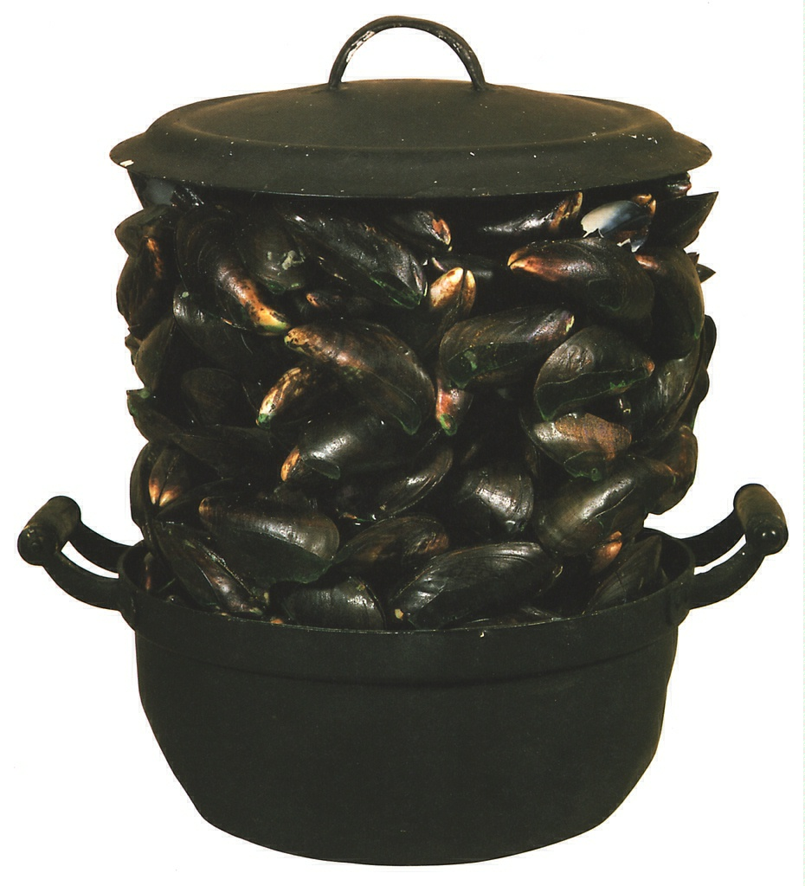

Словно взрыв неких витальных
сил произошел в этой кастрюле, образовав нагромождение
мидий. Они соединены друг
с другом зеленоватой смолой,
которая имитирует морскую волу. В основе этого произведения
каламбур, основанный на
французских словах-омонимах: La
moule - мидия и и Le moule -
литейная форма, лекало, шаблон.
Символизируя Бельгию -
родную страну Бродхарса, - где
мидии являются национальным
блюдом, это произведение
содержит в себе сатирический
намек на бельгийскую буржуазию.
Вообще мидия - самый известный мотив в творчестве
Бродхарса. Его скульптуры можно
считать концептуальными; по
мнению автора, они гораздо менее важны, чем идея, в них
заложенная. Сильное воздействие
на скульптора оказал его
соотечественник,
художник-сюрреалист Рене Маргитт. Как и Маргитт,
Бродхарс любит абсурдные
сопоставления и создаст
парадоксальные образы с помощью
слов, предметов обихода и
печатной продукции.